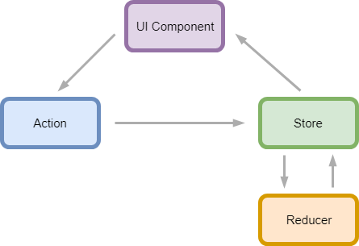

Desarrollo de Aplicaciones Frontend con arquitectura Redux
Miguel Coleto Muñoz
Tutorizado por Vicente Pelechano Ferragud
Grado en Ingeniería Infórmatica
Curso 2017-2018
Una arquitectura software facilita la comunicación entre los desarrolladores de un proyecto.
Cada proyecto tiene unas necesidades concretas. No existe una arquitectura perfecta para todos los casos.
Conocer muchos patrones nos proporciona herramientas para tomar mejores decisiones como ingenieros.
¿Qué es Redux?
Redux es una librería para el manejo del estado de aplicaciones Javascript
Fue creada por Dan Abramov en 2015
Las aquitecturas tradicionales basadas en Model View Controller proponen la comunicación bidireccional entre componentes

Redux busca que los cambios en el estado sean PREDECIBLES
Para ello propone que el flujo de datos a lo largo de la aplicación sea unidireccional
Antecedentes
Funciones puras: Ninguna función realiza efectos secundarios (llamadas a base de datos, servicios externos, etc.).
const addOne = x => x + 1
Inmutabilidad: La modificación de un objeto se hace mediante copia en vez de mutación directa.
const arrayOfNumbers = [1,2,3]
const numsGreaterThan2 = arrayOfNumbers
.filter(number => number > 2)
console.log(arrayOfNumbers) // [1,2,3]
console.log(numsGreaterThan2) // [3]
El cumplimiento de estos principios provoca que las funciones se vuelvan deterministas. Es decir, para un mismo input el output siempre es el mismo.
3 principios
Redux pretende que el manejo del estado sea predecible.
Para ello, nos impone 3 normas
Fuente de verdad única
Todo el estado de la aplicación se representa como un árbol. Se almacena en un componente Store.
Todos los componentes de la interfaz extraen los datos de este componente.
Estado protegido contra escritura
El contenedor del estado no permite la modificación directa.
Para modificarlo se han de propagar Acciones que describen qué ha pasado.
Las modificaciones son funciones puras
Cualquier modificación ha de ser determinista.
Las funciones puras que especifican cómo ha de cambiar el estado se llaman Reducers.
Componentes de Redux
Acciones
Son objetos portadores de la información que indica cómo se quiere cambiar el estado.
Contienen un campo type que representa el tipo de la acción. El resto de la estructura es libre.
const increaseCounterAction = {
type: "INCREASE_COUNTER",
payload: 1
}
Reducers
Son funciones puras que, dado el estado actual y una acción, devuelven un nuevo estado.
const counterReducer = (state = 0, action) => {
switch (action.type) {
case "INCREASE_COUNTER":
return state + action.payload
case "DECREASE_COUNTER":
return state - action.payload
case "RESET_COUNTER":
return 0
default:
return state
}
}
Store
Es el objeto que almacena el estado de la aplicación. Implementa el patrón Observer para comunicarse con los componentes de la interfaz de forma reactiva.
El estado se puede consultar en cualquier momento con getState(). Para modificarlo hay que llamar a dispatch(action).
Es de vital importancia que solo exista un Store en toda la aplicación para cumplir el principio de única fuente de verdad.
Redux nos ofrece métodos de ayuda para crear el Store a partir de la combinación de nuestros Reducers.
import { createStore, combineReducers } from 'redux'
const rootReducer = combineReducers(counterReducer)
const store = createStore(rootReducer)
store.subscribe(() => { console.log(store.getState()) })
store.dispatch(increaseCounterAction) // 1
store.dispatch(increaseCounterAction) // 2
store.dispatch(resetCounterAction) // 0
store.dispatch(decreaseCounterAction) // -1
Conclusiones
Redux, a diferencia de MVC, propone un flujo unidireccional de los datos.
Es sencillo porque tiene pocos componentes.
Es una herramienta más y hay que saber cuándo aplicarla.
Desarrollo de Aplicaciones Frontend con arquitectura Redux
Miguel Coleto Muñoz
Tutorizado por Vicente Pelechano Ferragud
Grado en Ingeniería Infórmatica
Curso 2017-2018